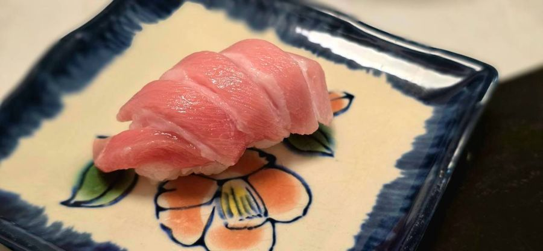
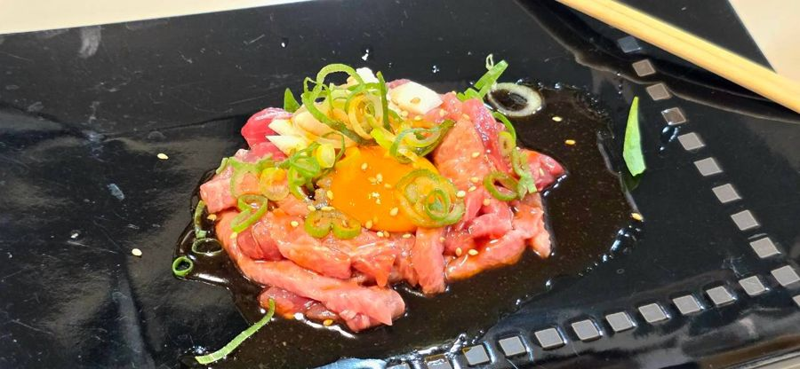
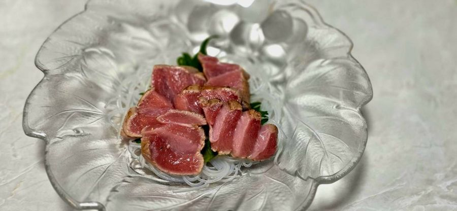
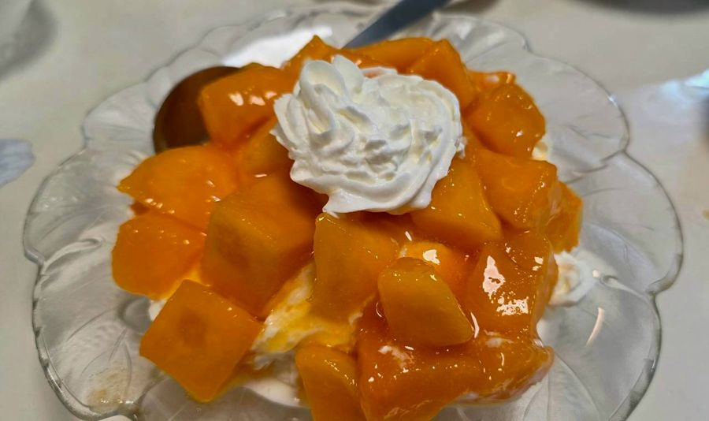
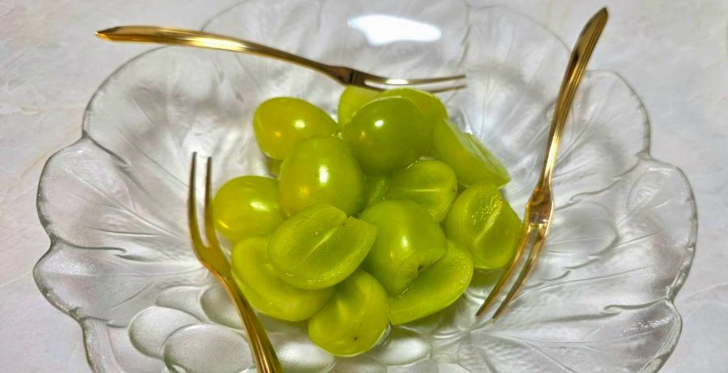

こねこ
1,000円
白身魚の香梅天
お寿司 3貫
完全予約制 ・ ご紹介のみ
寿司を握ってきた手で、一皿ずつ。
2名様より、前日までのご予約で
ランチ・ディナー営業しております
すし職人として魚と向き合ってきた店主が、いただいたご予約の分だけ仕入れ、仕込み、一品ずつ仕上げます。ご紹介でお越しのお客様に、気がねなく、おなかいっぱい楽しんでいただきたい。そんな思いで営むお店です。
ランチはコース料理のみ、ディナーは一品料理もたくさんご用意しております。
ご紹介のみで営業しているお店のため、住所と電話番号は掲載しておりません。
ここから先は、ご紹介のお客様だけ。
各コースにサラダ・お魚の西京焼・海鮮ホイル焼・茶碗蒸し・お吸い物・デザートが付きます。
※マンモス・海老フルコースには付いていません
ランチサービス：ドリンク全て 100円引き
お席だけのご予約も大歓迎です。コース料理をご希望の場合のみ、ご予約時にご注文ください。
2,000円
お魚の西京焼・真鯛の煮付け・海鮮ホイル焼・本マグロのカツ・海老マヨネーズ・アワビとキノコのバター焼・やさいサラダ・おにぎり・お吸い物・デザート
3,000円
2人前〜可 ／ 土日祝も大歓迎
お造り盛合せ・真鯛の西京焼・真鯛の煮付け・海鮮ホイル焼・焼海老・白身の香梅天・本まぐろカツ・やさいサラダ・和牛焼肉・お寿司5貫・茶碗蒸し・お吸い物・デザート
ディナーでは、コースのほかに一品料理もお選びいただけます。内容は季節ごとに入れ替わります。写真は一例です。










3,000円
ランチの場合は予約時にご注文ください
海老マヨネーズ・海老の天ぷら・赤海老のお造り・焼海老・海老のお寿司3貫・濃厚海老みそのお味噌汁
10,000円
お造り盛合せ・和牛スタミナ湯豆腐（お鍋）・うなぎ蒲焼・海老マヨネーズ・海鮮ニャンバーグ・大きなぶりカマ・いかマヨバター焼・特大太巻寿司
10,000円
大トロお造り・あわびバター焼・うなぎ蒲焼・海老の天ぷら・焼海老・海鮮ニャンバーグ・海鮮茶碗蒸し
お電話の際に、下記をお伝えください。
ご予約お待ちしております